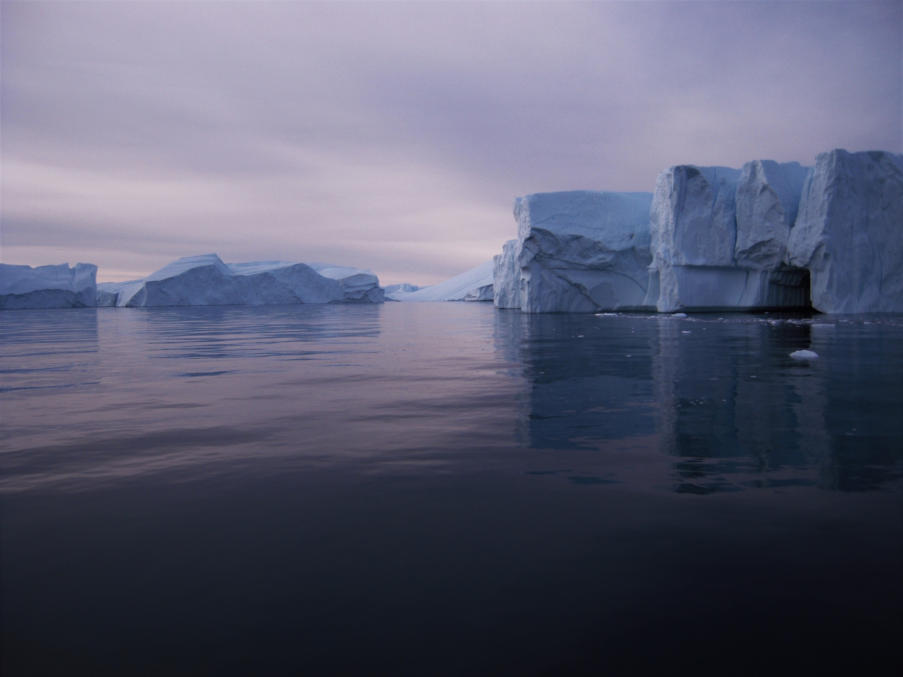
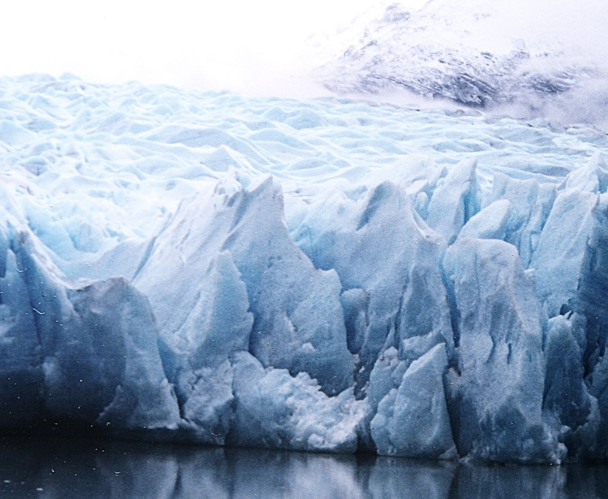

Le soir venu, un immense bloc de glace surgit à l'horizon.
- Un iceberg ! hurle la vigie.
Je me précipite sur le pont et tire ma longue-vue :
- Une quarantaine de mètre de haut... A bâbord toute, nous dévions notre route !
- Oh, j’aurais voulu passer en dessous de l’iceberg avec
Nouvelle Bleue, regrette un moussaillon.

- Impossible ! Sais-tu la profondeur de ce monstre de glace ? Près de cent mètres.
Nous l’aurions percuté avant de descendre aussi bas.
- Cent mètres ?
- Environ.
- Comment le sais-tu, capitaine ?
- C’est toujours comme ça. La glace est moins dense que l’eau liquide alors elle flotte à la surface, avec 90% de son volume immergé.
A sage distance de l’iceberg, le mécanicien de
Nouvelle Bleue déploie une machine par-dessus bord.
Le robot nage jusqu’à l’iceberg, brandit ses pâles acérées et scie un bloc de glace qu’il accroche à l’aide d’un harpon et tire jusqu’au bateau.
On le hisse à bord et c'est le cuisinier en chef qui se réjouit :
- De la glace pour mes frigos !
- Et de l’eau, surtout. Nous commencions à en manquer.
Comment ? Manquer d’eau en pleine mer ?
Oui, car la mer est salée et nous aimons l’eau douce des icebergs.
- Là-bas ! crie le cuisinier. Plus de glace !
- Ça, imbécile, se moque la vigie, c’est la banquise.
Nous approchons du nord de la Mer du Groënland : la banquise y persiste toute l’année, même à la fin de l’été.
- Banquise, iceberg… quelle différence ? maugrée le cuisinier.
-
C’est simple : la banquise est de l’eau de mer si froide qu’elle a gelé en surface, refroidie par l'atmosphère.
Elle mesure en moyenne deux mètres d’épaisseur, mais il en existe de toutes sortes.
On trouve des films de glace très fins qui donnent des reflets nacrés.
Mais aussi des îlots de glace à l’allure de pancakes…
Et enfin de vastes plateaux de glace formés par collision entre plaques de banquise et qui sont parcourus de rides et de fossés.
Ces plateaux sont si épais qu’ils survivent généralement à la fonte en été.
- Et les icebergs, c’est comme des gros blocs de banquise ?
- Non. Vous voyez ces gros nuages au loin ? Ils apportent la neige vers le Groënland.

La neige se dépose sur le continent, elle s’accumule et cristallise jusqu’à former un glacier.
Ce glacier est si vaste qu’il recouvre tout le Groënland : c’est une calotte polaire.
Nous arrivons à cet instant en vue de la terre ferme. D’immenses falaises de glace forment la côte que nous longeons.
- Sous ces falaises se trouve la roche.
Le continent est parfois enfoncé sous le niveau de la mer, écrasé sous le poids de la calotte !
Vous savez, elle mesure trois kilomètres d’épaisseur au centre du Groënland…
La glace est si lourde qu’elle se déforme, se plisse et s’écoule très lentement vers la mer.
D'ailleurs, la calotte déborde parfois sur la mer et nous bloque la route.
Nouvelle Bleue faisait un écart pour contourner l’énorme langue de glace, lorsqu'un bloc
s’en détache soudain dans un bruit de tonnerre.
La glace gronde et s’effondre dans l'eau, projetant vagues et éclaboussures à des mètres à la ronde.
L’équipage brinqueballant se maintient tant bien que mal aux balustrades et je décide de reprendre le large :
- Eloignons-nous, c’est trop dangereux.

Le bloc qui vient de tomber était un iceberg – un morceau de la calotte.
- La calotte est fragilisée par le réchauffement, elle s’écoule plus vite, fond et s’effrite en icebergs qui fonderont à leur tour.
- Dommage, je les aimais bien, moi, ces icebergs, s’attriste le moussaillon.
- Et puis, c’est de l’eau douce puisqu’ils viennent de la neige, comprend le cuisinier.
De son côté, le mécanicien en a assez de réparer les dégâts causés par les icebergs. Ces monstres de glace fêlent la coque de
Nouvelle Bleue.
- Ils sont dangereux ! rappelle-t-il, exaspéré. Qu’ils fondent et la calotte aussi !
Oh non, surtout pas ! Connaissez-vous les dangers de la fonte des glaces ? Venez, je vous les montre !